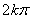
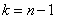

19.4.4. Извлечение корня
Определяется как действие обратное возведению в степень.
Число  называется корнем
называется корнем
 -ой степени из числа
-ой степени из числа  и обозначается , если .
и обозначается , если .
называется корнем
-ой степени из числа и обозначается , если .Пусть , а и известны.
Найдем. Два комплексных числа равны , если равны их модули и аргументы отличаются на .
,
или окончательн
Формула извлечения
корня n-ой степени из комплексного числа в
показательной форме
.
Различных (неодинаковых) значений корней будет ровно , и они будут соответствовать значениям
, и они будут соответствовать значениям
,  ,
,
,,  ,
,
,, ,
, .
Если же, например, , то
,
аналогично и т.д.
Вывод: корень -й степени из
комплексного числа имеет различных значений.
-й степени из
комплексного числа имеет различных значений.Числа имеют одинаковый модуль, и
так как аргументы отличаются, следовательно, значения корня будут изображаться
точками на окружности.
Вычислить и изобразить на комплексной плоскости 
Решение:
Запишем число  в показательной
форме:
в показательной
форме:
в показательной
форме:; .
Возможно четыре различных значений корня, соответствующих :
,
 ,
, ,
, .
. получен из корня поворотом на против
часовой стрелки,  из
из  поворотом
на
поворотом
на  и т.д.
и т.д.
из поворотом
на и т.д.Вычислить .
Решение:
;
где .

;
 – угол, лежащий в I четверти.
– угол, лежащий в I четверти..
Вычислить  ; изобразить
схематично значения корня на комплексной плоскости.
; изобразить
схематично значения корня на комплексной плоскости.
; изобразить
схематично значения корня на комплексной плоскости.Решение:
;  .
.
.Начальный аргумент при равен
.
равен
.Значения корня:
,  .
.
.Соответствующие 6 точек располагаются в вершинах правильного шестиугольника
на окружности радиусом .
Решить уравнение  .
.
.Используя формулу для решения квадратного уравнения и полагая  , получим:
, получим:
, получим:Рассмотренное уравнение имело вещественные коэффициенты.
Решить уравнение .
По формуле корней квадратного уравнения
.
Число, стоящее под знаком квадратного корня, можно было бы
записать в показательной форме, а затем по известному правилу извлечь из него
корень. Однако можно поступить иначе.
Положим 
Возводим обе части в квадрат и находим
 ,
,откуда
 ;
;  .
.Эта система имеет решения:

поэтому
Решить биквадратное уравнение  .
.
.Решение:
.
 ;
;  .
.